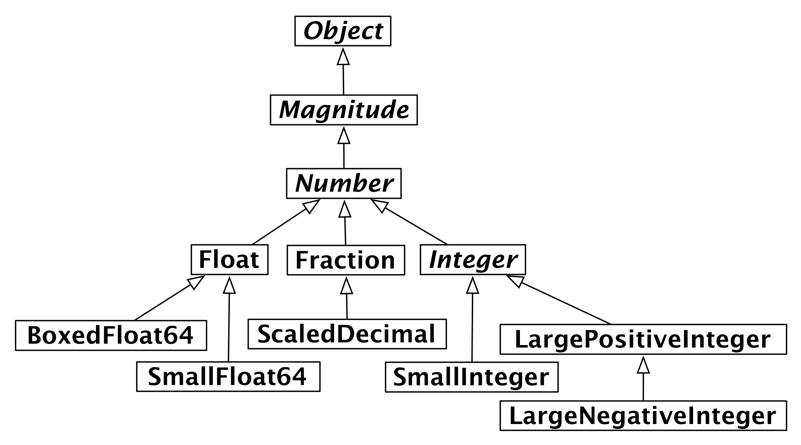
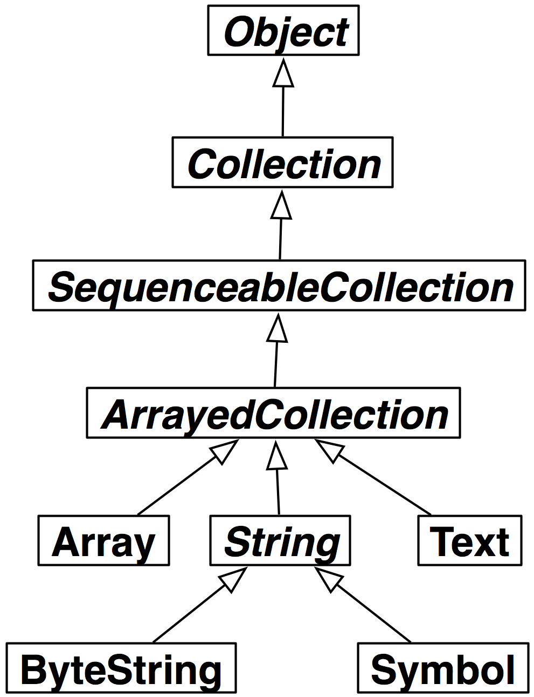
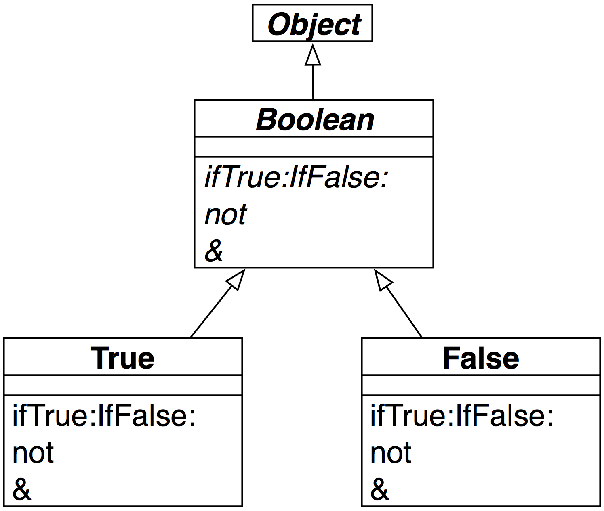

13 Basic classes
Pharo is a really simple language but powerful language. Part of its power is not in the language but in its class libraries. To program effectively in it, you will need to learn how the class libraries support the language and environment. The class libraries are entirely written in Pharo, and can easily be extended. (Recall that a package may add new functionality to a class even if it does not define this class.)
Our goal here is not to present in tedious detail the whole of the Pharo class
library, but rather to point out the key classes and methods that you will need
to use (or subclass/override) to program effectively. In this chapter, we will
cover the basic classes that you will need for nearly every application:
Object, Number and its subclasses, Character, String,
Symbol, and Boolean.
13.1 Object
For all intents and purposes, Object is the root of the inheritance
hierarchy. Actually, in Pharo the true root of the hierarchy is ProtoObject,
which is used to define minimal entities that masquerade as objects, but we can
ignore this point for the time being.
Object defines almost 400 methods (in other words, every class that you
define will automatically provide all those methods). Note: You can count
the number of methods in a class like so:
Object selectors size "Count the instance methods in Object"
Object class selectors size "Count the class methods"Class Object provides default behaviour common to all normal objects, such
as access, copying, comparison, error handling, message sending, and reflection.
Also utility messages that all objects should respond to are defined here.
Object has no instance variables, nor should any be added. This is due to
several classes of objects that inherit from Object that have special
implementations (SmallInteger and UndefinedObject for example) that the
VM knows about and depends on the structure and layout of certain standard
classes.
If we begin to browse the method protocols on the instance side of Object
we will start to see some of the key behaviour it provides.
13.2 Object printing
Every object can return a printed form of itself. You can select any expression
in a textpane and select the Print it menu item: this executes the
expression and asks the returned object to print itself. In fact this sends the
message printString to the returned object. The method printString,
which is a template method, at its core sends the message printOn: to its
receiver. The message printOn: is a hook that can be specialized.
Method Object>>printOn: is very likely one of the methods that you will most
frequently override. This method takes as its argument a Stream on which a
String representation of the object will be written. The default
implementation simply writes the class name preceded by a or an.
Object>>printString returns the String that is written.
For example, the class OpalCompiler does not redefine the method
printOn: and sending the message printString to an instance executes the
methods defined in Object.
OpalCompiler new printString
>>> 'an OpalCompiler'The class Color shows an example of printOn: specialization. It prints
the name of the class followed by the name of the class method used to generate
that color.
Color >> printOn: aStream
| name |
(name := self name).
name = #unnamed
ifFalse: [
^ aStream
nextPutAll: 'Color ';
nextPutAll: name ].
self storeOn: aStreamColor red printString
>>> 'Color red'printOn: vs. displayStringOn:
You should consider that the message printOn: is to better describe your objects when you are developing.
Indeed when you are using the inspector or the debugger, it is a lot more efficient to see a precise description of your object instead of the generic one.
Now printOn: is not done to be used to nicely display objects in UI lists for example, because you usually
want to display a different kind of information.
For this purpose you should use displayStringOn:.
The default implementation of displayStringOn: is to invoke printOn:.
Note that the introduction of displayStringOn: is recent so many libraries are still not making this distinction.
It is not really a problem but when you write new code, you should be aware of this.
printOn: vs. storeOn:
Note that the message printOn: is not the same as storeOn:. The message
storeOn: writes to its argument stream an expression that can be used to
recreate the receiver. This expression is executed when the stream is read using
the message readFrom:. On the other hand, the message printOn: just
returns a textual version of the receiver. Of course, it may happen that this
textual representation may represent the receiver as a self-evaluating
expression.
13.3 Representation and self-evaluating representation
In functional programming, expressions return values when executed.
In Pharo, message sends (expressions) return objects (values). Some objects have the
nice property that their value is themselves.
For example, the value of the object true is itself i.e., the object true.
We call such objects self-evaluating objects.
You can see a printed version of an object value when you print the object in a playground.
Here are some examples of such
self-evaluating expressions.
true
>>> true3@4
>>> (3@4)$a
>>> $a#(1 2 3)
>>> #(1 2 3)Color red
>>> Color redNote that some objects such as arrays are self-evaluating or not depending on the objects they contain. For example, an array of booleans is self-evaluating, whereas an array of persons is not. The following example shows that a dynamic array is self-evaluating only if its elements are:
{10@10. 100@100}
>>> {(10@10). (100@100)}{OpalCompiler new . 100@100}
>>> an Array(an OpalCompiler (100@100))Remember that literal arrays can only contain literals. Hence the following array does not contain two points but rather six literal elements.
#(10@10 100@100)
>>> #(10 #@ 10 100 #@ 100)Lots of printOn: method specializations implement self-evaluating behavior.
The implementations of Point>>printOn: and Interval>>printOn: are self-evaluating.
Point >> printOn: aStream
"The receiver prints on aStream in terms of infix notation."
aStream nextPut: $(.
x printOn: aStream.
aStream nextPut: $@.
(y notNil and: [y negative])
ifTrue: [
"Avoid ambiguous @- construct"
aStream space ].
y printOn: aStream.
aStream nextPut: $).PointInterval >> printOn: aStream
aStream nextPut: $(;
print: start;
nextPutAll: ' to: ';
print: stop.
step ~= 1 ifTrue: [aStream nextPutAll: ' by: '; print: step].
aStream nextPut: $)Interval1 to: 10
>>> (1 to: 10) "intervals are self-evaluating"13.4 Identity and equality
In Pharo, the message = tests object equality while the message == tests object identity.
The former is used to check whether two objects represent the same value, while the latter is used to check whether two expressions represent the same object.
The default implementation of object equality is to test for object identity:
Object >> = anObject
"Answer whether the receiver and the argument represent the same object.
If = is redefined in any subclass, consider also redefining the message hash."
^ self == anObjectIf you override =, you should consider overriding hash. If instances of
your class are ever used as keys in a Dictionary, then you should make sure
that instances that are considered to be equal have the same hash value.
Although you should override = and hash together, you should never
override ==. The semantics of object identity is the same for all
classes. Message == is a primitive method of ProtoObject.
Note that Pharo has some strange equality behaviour compared to other Smalltalks. For example a symbol and a string can be equal. (We consider this to be a bug, not a feature.)
#'lulu' = 'lulu'
>>> true'lulu' = #'lulu'
>>> true13.5 Class membership
Several methods allow you to query the class of an object.
class
You can ask any object about its class using the message class.
1 class
>>> SmallIntegerisKindOf:
Object>>isKindOf: answers whether the receiver's class is either the same
as, or a subclass of the argument class.
1 isKindOf: SmallInteger
>>> true1 isKindOf: Integer
>>> true1 isKindOf: Number
>>> true1 isKindOf: Object
>>> true1 isKindOf: String
>>> false1/3 isKindOf: Number
>>> true1/3 isKindOf: Integer
>>> false1/3 which is a Fraction is a kind of Number, since the class
Number is a superclass of the class Fraction, but 1/3 is not an
Integer.
respondsTo:
Object>>respondsTo: answers whether the receiver understands the message
selector given as an argument.
1 respondsTo: #,
>>> false13.6 About isKindOf: and respondTo:
A note on the usage of isKindOf: and respondsTo:.
Normally it is a bad idea to query an object for its class, or to ask it which messages it understands.
Instead of making decisions based on the class of object, you should simply send a message
to the object and let it decide (on the basis of its class) how it should
behave.
Client of an object should not query the object to decide which messages to send it.
The "Don't Ask, Tell" is an important cornerstone of good object-oriented design.
So watch out if you need to use these messages.
13.7 Shallow copying objects
Copying objects introduces some subtle issues. Since instance variables are accessed by reference, a shallow copy of an object shares its references to instance variables with the original object:
a1 := { { 'harry' } }.
a1
>>> #(#('harry'))a2 := a1 shallowCopy.
a2
>>> #(#('harry'))(a1 at: 1) at: 1 put: 'sally'.
a1
>>> #(#('sally'))a2
>>> #(#('sally')) "the subarray is shared!"Object>>shallowCopy is a primitive method that creates a shallow copy of an
object.
Since a2 is only a shallow copy of a1, the two arrays share a reference to the nested Array that they contain.
13.8 Deep copying objects
There are two ways to address the problems of sharing raised by shallow copy: (1) using deepCopy, (2) specializing postCopy and using copy.
deepCopy
Object>>deepCopy makes an arbitrarily deep copy of an object.
a1 := { { { 'harry' } } } .
a2 := a1 deepCopy.
(a1 at: 1) at: 1 put: 'sally'.
a1
>>> #(#('sally'))a2
>>> #(#(#('harry')))The problem with deepCopy is that it will not terminate when applied to a
mutually recursive structure:
a1 := { 'harry' }.
a2 := { a1 }.
a1 at: 1 put: a2.
a1 deepCopy
>>> !''... does not terminate!''!copy
The other solution is to use message copy.
It is implemented on Object as follows: the method postCopy is sent to the result of the message shallowCopy.
Object >> copy
"Answer another instance just like the receiver.
Subclasses typically override postCopy;
they typically do not override shallowCopy."
^ self shallowCopy postCopyObject >> postCopy
^ selfBy default postCopy returns self.
It means that by default copy is doing the same as shallowCopy but each subclass can decide to customise the postCopy method which acts as a hook.
You should override postCopy to copy any instance variables that should not be shared.
In addition there is a good chance that postCopy should always do a super postCopy to ensure
that state of the superclass is also copied.
13.9 Debugging
Object defines also some methods related to debugging.
halt
The most important method here is halt.
To set a breakpoint in a method, simply insert the expression self halt at some point in the body of the
method. Note that since halt is defined on Object you can also write
1 halt.
When this message is sent, execution will be interrupted and a debugger will open to this point in your program.
You can also use Halt once or Halt if: aCondition.
Have a look at the class Halt which is an exception dedicated to debugging.
assert:
The next most important message is assert:, which expects a block as its
argument.
If the block evaluates to true, execution continues.
Otherwise an AssertionFailure exception will be raised. If this exception is not
otherwise caught, the debugger will open to this point in the execution.
assert: is especially useful to support design by contract. The most
typical usage is to check non-trivial pre-conditions to public methods of
objects. Stack>>pop could easily have been implemented as follows (note
that this definition is anhypothetical example and not in the Pharo 8.0 system):
Stack >> pop
"Return the first element and remove it from the stack."
self assert: [ self isNotEmpty ].
^ self linkedList removeFirst elementDo not confuse Object>>assert: with TestCase>>assert:, which occurs in
the SUnit testing framework (see Chapter 12).
While the former expects a block as its argument (actually, it will take any argument that understands
value, including a Boolean), the latter expects a Boolean. Although
both are useful for debugging, they each serve a very different purpose.
13.10 Error handling
This protocol contains several methods useful for signaling run-time errors.
doesNotUnderstand:
The message doesNotUnderstand: (commonly abbreviated in discussions as DNU or MNU)
is sent whenever message lookup fails.
The default implementation, i.e., Object>>doesNotUnderstand: will trigger the
debugger at this point. It may be useful to override doesNotUnderstand: to
provide some other behaviour.
error
Object>>error and Object>>error: are generic methods that can be used to
raise exceptions. Generally it is better to raise your own custom exceptions,
so you can distinguish errors arising from your code from those coming from
kernel classes.
subclassResponsibility
Abstract methods are implemented by convention with the body self
subclassResponsibility.
Should an abstract class be instantiated by accident, then calls to abstract methods will result in Object>>subclassResponsibility being executed.
Object >> subclassResponsibility
"This message sets up a framework for the behavior of the class' subclasses.
Announce that the subclass should have implemented this message."
SubclassResponsibility signalFor: thisContext sender selectorMagnitude, Number, and Boolean are classical examples of abstract
classes that we shall see shortly in this chapter.
Number new + 1
>>> !''Error: Number is an abstract class. Make a concrete subclass.''!shouldNotImplement
self shouldNotImplement is sent by convention to signal that an inherited
method is not appropriate for this subclass. This is generally a sign that
something is not quite right with the design of the class hierarchy.
Due to the limitations of single inheritance, however, sometimes it is very hard to avoid
such workarounds.
A typical example is Collection>>remove: which is inherited by
Dictionary but flagged as not implemented. A Dictionary provides
removeKey: instead.
deprecated: and related
Sending self deprecated: signals that the current method should no longer be used, if deprecation has been turned on.
You can turn it on/off in the Debugging section using the Settings browser.
The argument should describe an alternative.
Look for senders of the message deprecated: and other related messages to get an idea.
13.11 Testing
Testing methods have nothing to do with SUnit testing!
A testing method is one that lets you ask a question about the state of the receiver and returns a Boolean.
Numerous testing methods are provided by Object.
There are isArray, isBoolean, isBlock, isCollection and so on. Generally such methods
are to be avoided since querying an object for its class is a form of violation of encapsulation. They are often used as an alternative to isKindOf: but they show the same limit in the design.
Instead of testing an object for its class, one should simply send a message and let the object decide how to handle it.
Nevertheless some of these testing methods are undeniably useful.
The most useful are probably ProtoObject>>isNil and Object>>notNil.
The Null Object design pattern can obviate the need for even these methods but it is often not possible and not the right choice.
13.12 Initialize
A final key method that occurs not in Object but in ProtoObject is
initialize.
ProtoObject >> initialize
"Subclasses should redefine this method to perform initializations on instance creation"initialize as an empty hook methodThe reason this is important is that in Pharo, the default new method
defined for every class in the system will send initialize to newly created
instances.
Behavior >> new
"Answer a new initialized instance of the receiver (which is a class) with no indexable
variables. Fail if the class is indexable."
^ self basicNew initializenew as a class-side template methodThis means that simply by overriding the initialize hook method, new
instances of your class will automatically be initialized. The initialize
method should normally perform a super initialize to establish the class
invariant for any inherited instance variables.
13.13 Numbers
Numbers in Pharo are not primitive data values but true objects.
Of course numbers are implemented efficiently in the virtual machine, but the
Number hierarchy is as perfectly accessible and extensible as any other
portion of the class hierarchy.

The abstract root of this hierarchy is Magnitude, which represents all kinds
of classes supporting comparison operators. Number adds various arithmetic
and other operators as mostly abstract methods. Float and Fraction
represent, respectively, floating point numbers and fractional values. Float
subclasses (BoxedFloat64 and SmallFloat64) represent Floats on certain
architectures. For example BoxedFloat64 is only available for 64 bit
systems.
Integer is also abstract, thus distinguishing between subclasses
SmallInteger, LargePositiveInteger and LargeNegativeInteger.
For the most part, users do not need to be aware of the difference between the three
Integer classes, as values are automatically converted as needed.
13.14 Magnitude
Magnitude is the parent not only of the Number classes, but also of
other classes supporting comparison operations, such as Character,
Duration and Timespan.
Methods < and = are abstract. The remaining operators are generically
defined.
For example:
Magnitude >> < aMagnitude
"Answer whether the receiver is less than the argument."
^ self subclassResponsibility
Magnitude >> > aMagnitude
"Answer whether the receiver is greater than the argument."
^ aMagnitude < self13.15 Numbers
Similarly, Number defines +, -, * and / to be abstract, but
all other arithmetic operators are generically defined.
All Number objects support various converting operators, such as
asFloat and asInteger. There are also numerous shortcut constructor
methods which generate Durations, such as hour, day and week.
Numbers directly support common math functions such as sin, log,
raiseTo:, squared, sqrt and so on.
The method Number>>printOn: is implemented in terms of the abstract method
Number>>printOn:base:. (The default base is 10.)
Testing methods include even, odd, positive and negative.
Unsurprisingly Number overrides isNumber.
More interestingly, isInfinite is defined to return false.
Truncation methods include floor, ceiling, integerPart, fractionPart and so on.
1 + 2.5
>>> 3.5 "Addition of two numbers"3.4 * 5
>>> 17.0 "Multiplication of two numbers"8 / 2
>>> 4 "Division of two numbers"10 - 8.3
>>> 1.7 "Subtraction of two numbers"12 = 11
>>> false "Equality between two numbers"12 ~= 11
>>> true "Test if two numbers are different"12 > 9
>>> true "Greater than"12 >= 10
>>> true "Greater or equal than"12 < 10
>>> false "Smaller than"100@10
>>> 100@10 "Point creation"The following example works surprisingly well in Pharo:
1000 factorial / 999 factorial
>>> 1000Note that 1000 factorial is really calculated, which in many other languages can be quite difficult to compute.
This is an excellent example of automatic coercion and exact handling of a number.
Try to display the result of 1000 factorial. It takes more time to display it than to calculate it!
13.16 Floats
Float implements the abstract Number methods for floating point numbers.
More interestingly, Float class (i.e., the class-side of Float)
provides methods to return the following constants: e, infinity,
nan and pi.
Float pi
>>> 3.141592653589793Float infinity
>>> Float infinityFloat infinity isInfinite
>>> true13.17 Fractions
Fractions are represented by instance variables for the numerator and
denominator, which should be Integers. Fractions are normally created by
Integer division (rather than using the constructor method
Fraction>>numerator:denominator:):
6/8
>>> (3/4)(6/8) class
>>> FractionMultiplying a Fraction by an Integer or another Fraction may yield
an Integer:
6/8 * 4
>>> 313.18 Integers
Integer is the abstract parent of three concrete integer implementations.
In addition to providing concrete implementations of many abstract Number
methods, it also adds a few methods specific to integers, such as factorial,
atRandom, isPrime, gcd: and many others.
SmallInteger is special in that its instances are represented compactly --
instead of being stored as a reference, a SmallInteger is represented
directly using the bits that would otherwise be used to hold a reference.
The first bit of an object reference indicates whether the object is a
SmallInteger or not.
The virtual machine abstracts that from you,
therefore you cannot see this directly when inspecting the object.
The class methods minVal and maxVal tell us the range of a
SmallInteger, note that it varies depending on the size of your image
from either (2 raisedTo: 30) - 1 for a 32-bits image or
(2 raisedTo: 60) - 1 for a 64-bits one.
SmallInteger maxVal = ((2 raisedTo: 30) - 1)
>>> trueSmallInteger minVal = (2 raisedTo: 30) negated
>>> trueWhen a SmallInteger goes out of this range, it is automatically converted to
a LargePositiveInteger or a LargeNegativeInteger, as needed:
(SmallInteger maxVal + 1) class
>>> LargePositiveInteger(SmallInteger minVal - 1) class
>>> LargeNegativeIntegerLarge integers are similarly converted back to small integers when appropriate.
As in most programming languages, integers can be useful for specifying
iterative behaviour. There is a dedicated method timesRepeat: for
evaluating a block repeatedly. We have already seen a similar example in
Chapter 8.
| n |
n := 2.
3 timesRepeat: [ n := n * n ].
n
>>> 25613.19 Characters
Character is defined a subclass of Magnitude.
Printable characters are represented in Pharo as $<char>.
For example:
$a < $b
>>> trueNon-printing characters can be generated by various class methods. Character
class>>value: takes the Unicode (or ASCII) integer value as argument and
returns the corresponding character.
The protocol accessing untypeable characters contains a number of convenience constructor methods such as
backspace, cr, escape, euro, space, tab, and so on.
Character space = (Character value: Character space asciiValue)
>>> trueThe printOn: method is clever enough to know which of the three ways to
generate characters offers the most appropriate representation:
Character value: 1
>>> Character homeCharacter value: 2
>>> Character value: 2Character value: 32
>>> Character spaceCharacter value: 97
>>> $aVarious convenient testing methods are built in: isAlphaNumeric,
isCharacter, isDigit, isLowercase, isVowel, and so on.
To convert a Character to the string containing just that character, send
asString.
In this case asString and printString yield different results:
$a asString
>>> 'a'$a
>>> $a$a printString
>>> '$a'Like SmallInteger, a Character is a immediate value not a object
reference.
Most of the time you won't see any difference and can use objects of class Character like any other too.
But this means, equal value characters are always identical:
(Character value: 97) == $a
>>> true13.20 Strings
A String is an indexed Collection that holds only Characters.

In fact, String is abstract and Pharo strings are actually instances of
the concrete class ByteString.
'hello world' class
>>> ByteStringThe other important subclass of String is Symbol. The key difference is
that there is only ever one single instance of Symbol with a given value.
(This is sometimes called the unique instance property). In contrast, two
separately constructed Strings that happen to contain the same sequence of
characters will often be different objects.
'hel','lo' == 'hello'
>>> false('hel','lo') asSymbol == #hello
>>> trueAnother important difference is that a String is mutable, whereas a
Symbol is immutable. Note that it is a bad idea to mutate literal strings because they can be shared between
multiple method execution.
'hello' at: 2 put: $u; yourself
>>> 'hullo'#hello at: 2 put: $u
>>> Error: symbols can not be modified.It is easy to forget that since strings are collections, they understand the same messages that other collections do:
#hello indexOf: $o
>>> 5Although String does not inherit from Magnitude, it does support the
usual comparing methods, <, = and so on.
In addition, String>>match: is useful for some basic glob-style pattern-matching:
'*or*' match: 'zorro'
>>> trueStrings support a rather large number of conversion methods.
Many of these are shortcut constructor methods for other classes, such as asDate, asInteger and so on.
There are also a number of useful methods for converting a string to another string, such as capitalized and
translateToLowercase.
For more on strings and collections, see Chapter 14.
13.21 Booleans
The class Boolean offers a fascinating insight into how much of the
Pharo language has been pushed into the class library.
Boolean is the abstract superclass of the singleton classes True and False.

Most of the behaviour of Booleans can be understood by considering the
method ifTrue:ifFalse:, which takes two Blocks as arguments.
4 factorial > 20
ifTrue: [ 'bigger' ]
ifFalse: [ 'smaller' ]
>>> 'bigger'The method ifTrue:ifFalse: is abstract in class Boolean. The
implementations in its concrete subclasses are both trivial:
True >> ifTrue: trueAlternativeBlock ifFalse: falseAlternativeBlock
^ trueAlternativeBlock value
False >> ifTrue: trueAlternativeBlock ifFalse: falseAlternativeBlock
^ falseAlternativeBlock valueifTrue:ifFalse:Each of them execute the correct block depending on the receiver of the message.
In fact, this is the essence of OOP: when a message is sent to an object, the
object itself determines which method will be used to respond.
In this case an instance of True simply executes the true alternative, while an
instance of False executes the false alternative.
All the abstract Boolean methods are implemented in this way for True and False.
For example the implementation of negation (message not) is defined the same
way:
True >> not
"Negation--answer false since the receiver is true."
^ false
False >> not
"Negation--answer true since the receiver is false."
^ trueBooleans offer several useful convenience methods, such as ifTrue:,
ifFalse:, and ifFalse:ifTrue.
You also have the choice between eager and lazy conjunctions and disjunctions.
In the first example below, both Boolean subexpressions are executed, since &
takes a Boolean argument. Even if (1 > 2 ) is obviously false and there is no need to check ( 3 < 4), &
execute its arguments.
( 1 > 2 ) & ( 3 < 4 )
>>> false "Eager, must evaluate both sides"In the second and third examples, only the receiver expression 1 > 2 is executed and false -- the argument closure is not executed.
Notice that the message and: expects a closure as argument.
In the third example, the expression [ 1 / 0 ] is not executed and does not raise an error, because and: only execute is argument if the receiver true.
( 1 > 2 ) and: [ 3 < 4 ]
>>> false "Lazy, only evaluate receiver"( 1 > 2 ) and: [ 1 / 0 ]
>>> false "argument block is never executed, so no exception"A lazy or: is also offering the similar behavior.
It only executes the argument in this case, when the receiver is false.
Try to imagine how and: and or: are implemented.
Check the implementations in Boolean, True and False.
13.22 Chapter summary
- If you override
= then you should overridehashas well. - Override
postCopyto correctly implement copying for your objects. - Use
self halt.to set a breakpoint. - Return
self subclassResponsibilityto make a method abstract. - To give an object a
Stringrepresentation you should overrideprintOn:. - Override the hook method
initializeto properly initialize instances. Numbermethods automatically convert betweenFloats,Fractions andIntegers.Fractions truly represent rational numbers rather than floats.- All
Characters are like unique instances. Strings are mutable;Symbols are not. Take care not to mutate string literals, however!Symbols are unique;Strings are not.Strings andSymbols areCollections and therefore support the usualCollectionmethods.